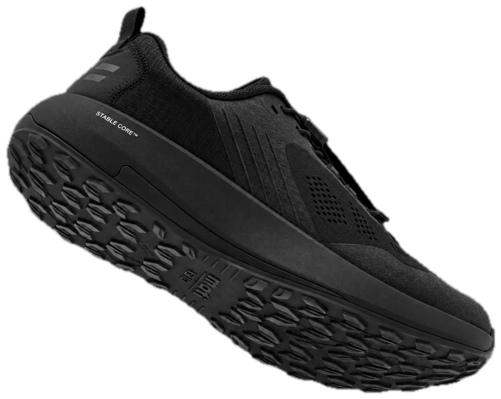
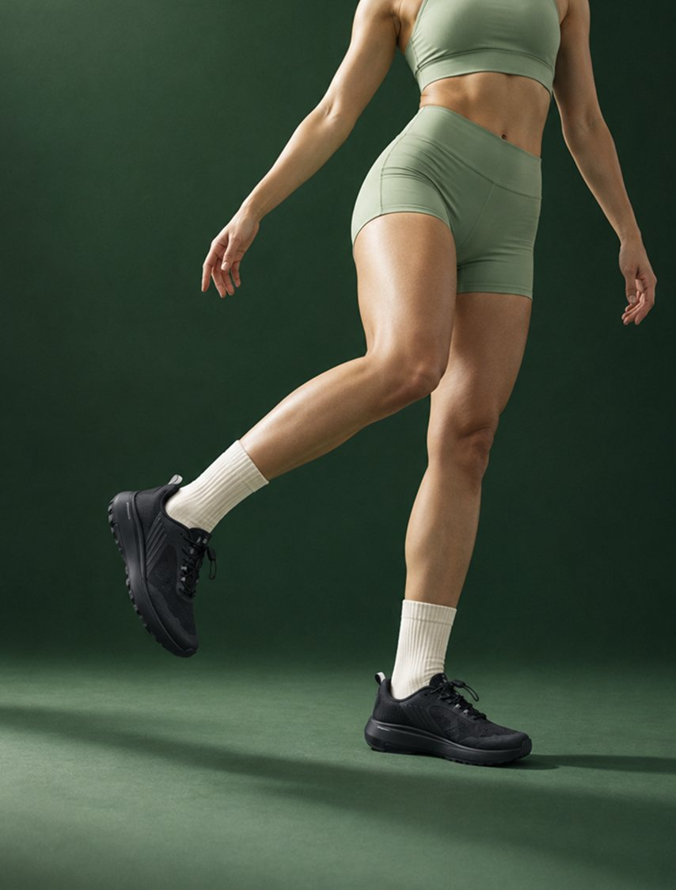
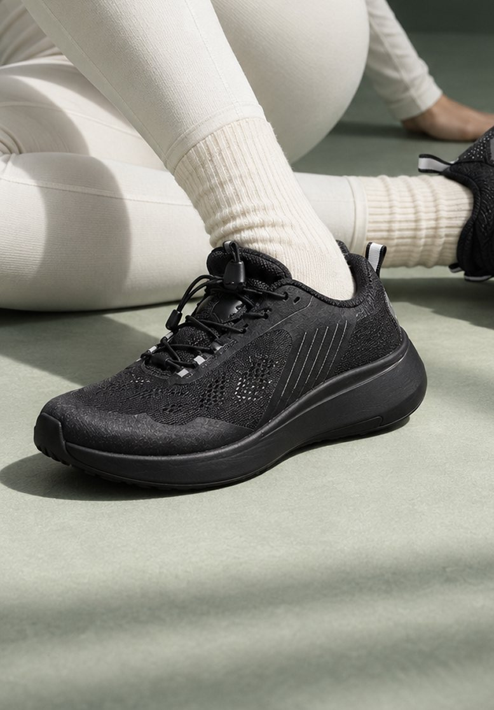
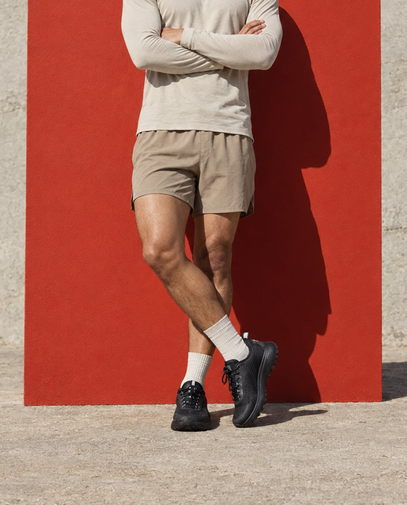
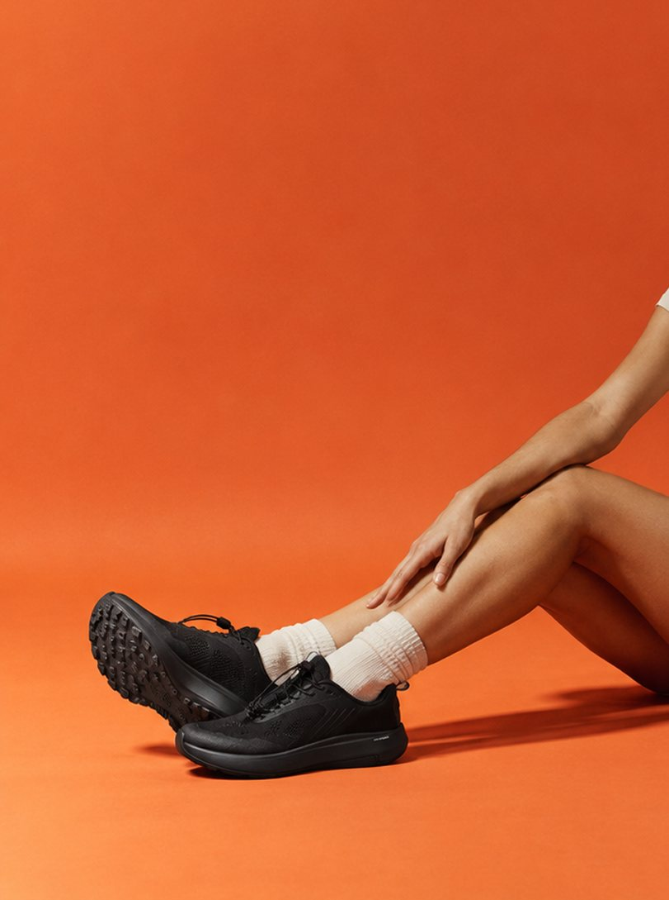
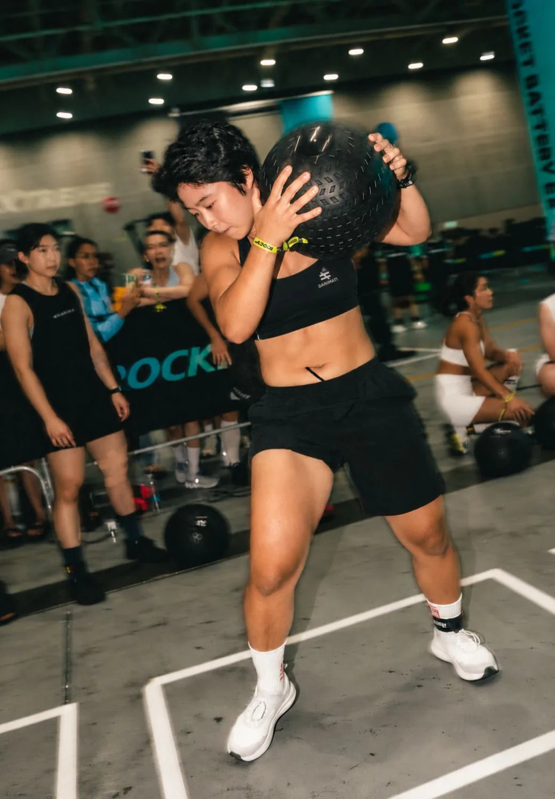

For everyday training
헬스장 갈 때
신발 두 켤레
챙기지 마세요
트레드밀 웜업부터 스쿼트까지, 한 켤레로.
BR-001 CORE BLACK · 159,000원
코치 이상학 · 하이브리드 선수

For everyday training
트레드밀 웜업부터 스쿼트까지, 한 켤레로.
BR-001 CORE BLACK · 159,000원
코치 이상학 · 하이브리드 선수
Your one hour
운동 중간에 신발을 갈아 신는 사람은 없습니다. 그런데 대부분의 신발은 그 한 시간 중 일부만 감당합니다.
A-TPU 100% 미드솔이 착지 에너지를 되돌려줍니다. 웜업에서 다리를 미리 소모하지 않습니다.
Stable Core™ 넓은 플랫폼이 좌우로 눌리지 않습니다. 바벨 아래에서 발바닥이 바닥에 그대로 붙어 있습니다.
Bridge Mechanics™ 구조의 측면 지지와 비틀림 제어가 방향을 바꾸는 순간 발의 중심을 잡아줍니다.
Full-coverage CPU 아웃솔과 다방향 러그 패턴. 매트 위에서도 고무 바닥에서도 미끄러지지 않습니다.
갈아 신지 않습니다. 그대로 뜁니다.
The real question
많이 받는 질문이고, 근거 있는 걱정입니다. 다만 원인이 잘못 지목되는 경우가 많습니다.
문제는 쿠션의 두께가 아니라
바닥 플랫폼의 폭입니다.
바닥 면이 좁아 한쪽부터 눌린다
→ 발이 따라 기울어짐
같은 쿠션 높이, 넓어진 바닥 면
→ 수평 유지
러닝화의 미드솔은 앞뒤 추진을 위해 좁고 둥글게 설계됩니다. 달릴 때는 이 형태가 유리하지만, 바벨을 들고 좌우로 힘이 실리는 순간 좁은 바닥 면이 먼저 눌리고 발이 따라 기울어집니다. “쿠션 때문에 불안하다”고 느끼는 감각의 정체가 이것입니다.
BR-001은 쿠션을 덜어내는 대신 바닥 면을 넓혔습니다. Stable Core™ 는 미드솔 하단을 넓은 플랫폼으로 펴서 좌우 하중이 걸려도 접지면이 수평을 유지하도록 설계한 구조입니다. 반발력은 러닝에서 쓰고, 안정성은 리프팅에서 씁니다.
그래서 BR-001은 “쿠션을 줄인 러닝화”도 “쿠션을 넣은 리프팅화”도 아닙니다. 두 요구를 다른 부위로 나눠 푼 신발입니다.
How it works
Full-coverage CPU 아웃솔과 다방향 러그 패턴. 고무 바닥, 매트, 트레드밀 벨트까지 접지 방향을 가리지 않습니다.

30만원대 프리미엄 모델에 쓰이는 A-TPU 100% 미드솔로 에너지를 돌려주고, Stable Core™ 넓은 플랫폼으로 그 위를 안정적으로 받칩니다.

미드풋과 힐을 연결하는 Bridge Mechanics™ 구조. 측면 지지와 비틀림 제어로 착지부터 방향 전환까지 발의 중심을 유지합니다.

기존 BR-001(오이스터 그레이 · 샌드 베이지)보다 어퍼를 통기성 좋은 메시로 바꿔 더 가볍고 쾌적합니다.

Why not two pairs
헬스장에서 흔히 신는 두 종류와 BR-001이 각각 무엇을 위해 설계됐는지.
| 러닝화 | 리프팅화 | BR-001 | |
|---|---|---|---|
| 쿠션 · 반발 | ● 높음 | ○ 거의 없음 | ● A-TPU 100% |
| 좌우 안정성 | ○ 좁은 플랫폼 | ● 높음 | ● Stable Core™ |
| 접지력 | ◐ 노면 한정 | ◐ 평면 한정 | ● 다방향 러그 |
| 러닝 · 유산소 | ● | ○ | ● |
| 웨이트 | ◐ | ● | ● |
| 가방에 챙길 켤레 | 2켤레 | 2켤레 | 1켤레 |
● 적합 · ◐ 부분적 · ○ 부적합. 일반 러닝화 / 리프팅화는 각 카테고리의 일반적인 설계 특성을 기준으로 한 비교입니다.
Size
온라인에서 신발을 살 때 가장 망설여지는 부분입니다. 아래대로 한 번만 재보면 실패 확률이 크게 줄어듭니다.
230 — 300mm · 10mm 단위
| 발 길이 | 권장 사이즈 |
|---|---|
| 230 – 239 mm | 230 |
| 240 – 249 mm | 240 |
| 250 – 259 mm | 250 |
| 260 – 269 mm | 260 |
| 270 – 279 mm | 270 |
| 280 – 289 mm | 280 |
| 290 – 299 mm | 290 |
| 300 mm 이상 | 300 |
국내에서 개발한 신발입니다. 한국인 발 평균은 서구 기준보다 발볼이 넓고 발등이 높아, BR-001은 그 기준으로 라스트를 잡았습니다. 발볼과 발등 모두 여유가 있습니다.
다른 브랜드에서 발볼이 껴서 한 사이즈 올려 신으셨다면, BR-001에서는 올리지 마시고 위 표대로 골라 주세요.
반대로 발볼이 좁거나 발등이 낮은 편이라면 끈을 평소보다 한 칸 더 조여 주세요.
No risk
신어보지 않고 사는 부담을 저희가 가져갑니다.
처음 받아보신 사이즈가 맞지 않으면 1회에 한해 왕복 배송비 없이 교환해 드립니다.
배송비 부담 없이 교환 또는 전액 환불해 드립니다.
수령 후 7일 이내 미착용 상태에서 가능합니다. 편도 배송비 4,000원이 발생합니다.
정책 확인 필요 — 현재 사전예약 페이지는 “교환 왕복 8,000원”입니다. 일반 판매 페이지에서 첫 교환 무료로 갈지 정해야 위 1번 문구가 확정됩니다.
Look
올블랙이라 운동복에도, 그대로 나가도 어색하지 않습니다.



FAQ
쿠션 신발이 불안정하게 느껴지는 원인은 대부분 바닥 플랫폼이 좁기 때문입니다. BR-001은 Stable Core™ 로 미드솔 하단을 넓게 펴서 좌우 하중에도 접지면이 수평을 유지하도록 설계했습니다. 자세한 구조는 위 단면 비교를 참고해 주세요.
아닙니다. 굽이 있고 미드솔이 거의 없는 전용 리프팅화만큼 단단하지는 않습니다. BR-001은 한 세션 안에서 유산소와 웨이트를 오가는 사용을 기준으로 설계됐습니다. 고중량 스쿼트만 집중적으로 하신다면 전용화가 더 맞습니다.
A-TPU 100% 미드솔은 30만원대 프리미엄 러닝 모델에 쓰이는 소재로, 착지 에너지를 되돌려 줍니다. 웜업과 마무리 유산소, 일상 러닝에 적합합니다.
어퍼가 달라졌습니다. 오이스터 그레이 · 샌드 베이지 대비 통기성 좋은 메시 소재로 바꿔 더 가볍고 쾌적합니다. 미드솔과 아웃솔 구조는 동일합니다.
오히려 잘 맞는 편입니다. BR-001은 국내에서 한국인 발 평균을 기준으로 라스트를 설계해 발볼과 발등 모두 여유를 뒀습니다. 다른 브랜드에서 발볼 때문에 한 사이즈 올려 신으셨다면 BR-001에서는 올리지 마시고, 발 길이 기준 사이즈를 그대로 고르세요.
네. 전체적으로 반 사이즈(약 5mm) 크게 나왔습니다. 그래서 발 길이를 10mm 단위로 내려서 고르시면 됩니다 — 발 길이 255mm라면 250입니다. 발볼·발등에 여유가 있는 설계라 길이만 맞으면 헐겁지 않습니다.
Also at the top
일상 훈련을 기준으로 만들었지만, 상한선이 어디인지도 알려드립니다.

Hybrid · CrossFit Athlete & Coach
REXTREME 2026 하이브리드 게임 1위
“항상 BR-001을 신고 훈련해요. 특히 대회 때 접지력과 반발성이 모두 좋아 스테이션마다 안정적으로 움직일 수 있었어요.” 하수현 · CrossFit Athlete & Coach